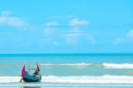

Cox's Bazar Sea Beach
Cox’s Bazar is a town on the southeast coast of Bangladesh. It’s known for its very long, sandy beachfront, stretching from Sea Beach in the north to Kolatoli Beach in the south. Aggameda Khyang monastery is home to bronze statues and centuries-old Buddhist manuscripts. South of town, the tropical rainforest of Himchari National Park has waterfalls and many birds. North, sea turtles breed on nearby Sonadia Island.
Cox's Bazar is a city, fishing port, tourism centre, and district headquarters in south-eastern Bangladesh.